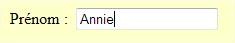
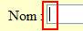
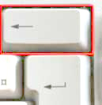

On apprend maintenant � effacer du texte
avec la touche Retour Arri�re
qui se trouve � droite de votre clavier
Exemple 
En appuyant sur la touche retour arri�re, la lettre e va s'effacer,
Puis la lettre i, puis le n ...
Taper votre pr�nom dans la case Pr�nom :
puis l'effacer pour taper un autre pr�nom
Pour effacer le texte
dans une zone,
utiliser la touche
retour Arri�re

Cette touche efface le caract�re qui est plac� avant le curseur.
